Contributed by Miles Lumbard
Photographs by Miles Lumbard & Jerry Clark
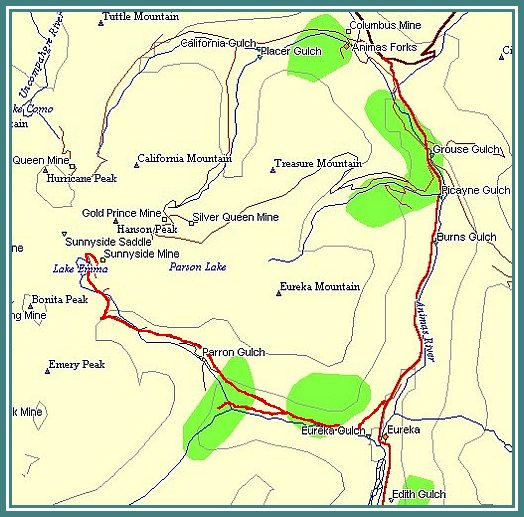
| The Eureka Gulch trail takes off from the road to Animas Forks, about a quarter mile above the massive foundations of the Sunnyside Mill, at the Eureka townsite. The trail ain't particularly hard or hair raisin', but it traverses more than a hundred years of history. All along this trail, you'll be seein' the remains of the Sunnyside Mine operation. There's tram towers and cable, the remains of Judge Terry's mill, an angle tram station, and if they're done remediatin' the mine site at the top, you may be able to get there too. When we went up last, there was a gate just above the angle station. |
| After you turn off onto the trail, you'll quickly find yourself snaking across the face of the Eureka mountain. The trail runs nearly right over the top of the old mill foundations before turning up into the gulch. This is a good place to get some spectacular views of Eureka, and the Animas Canyon. From here the trail heads up into the gulch, passed old tram towers, some with cable still hangin' on 'em. About a mile up the trail, a side trail takes off to the left, and leads to the remains of Judge Terry's Midway Mill. The only part still standing is the ore bin. This is where the tram buckets from the mine deposited their loads. Behind the bins, the remains of the cable tensioning weight can be found. The weight was a heavy wooden box, which was filled with rocks. Beside the bins, one of the massive wooden pulleys that operated the stamps can be seen. To the right of the trail, just before the mill, are the remains of the Judge's house, the Midway Tunnel portal, and the cabin of Rueben McNutt, the original locator of the Sunnyside. |
| The Sunnyside Mine was located by Reuben McNutt and George Howard in 1873. They discovered the huge gold bearing vein exposed on the surface in what became Sunnyside Basin. The basin sits between Bonita, Hurricane, and Hanson peaks. McNutt laid his claim on the east side of the vein, naming it the Sunnyside, and Howard claimed the west side, calling it the No Name. In it's early years, disputes between McNutt and Howard, as well as between McNutt and other investors prevented the mine from reaching it's potential. One of those investors, Judge John Terry eventually gained control of the entire operation in 1900. He obtained his original stake in the Sunnyside in exchange for constructing and operating a mill at the mine site in Sunnyside Basin. In 1890, he built the Midway Mill to treat ore from the Sunnyside and other mines in Eureka Gulch. Since the Midway Mill could only handle high grade ore, Terry built the first Sunnyside Mill in Eureka in 1898, and also built the first Sunnyside tramway, which ran from the mine to the Midway Mill, and eventually down to the first mill in Eureka. The remains of the footing timbers of his original mill can be seen just to the south of the massive concrete foundations of the second Sunnyside Mill. Judge Terry passed away in 1910, and in 1917 his children sold the Sunnyside to the United States Smelting and Refining Co. The USS&R built the massive second Sunnyside Mill in Eureka using materials and equipment taken from the Gold Prince Mill in Animas Forks. They also built the second tramway, which ran down the north side of the gulch from the angle station directly to the new mill. |
| Back on the main trail, we're still climbin' towards the site of the Sunnyside Mine and Lake Emma. Once you get passed the tree line, keep an eye out on the south side of the gulch for more remains of tram towers, the angle station, where the buckets changed direction, and the tension station, that kept the cables taught. The angle station was built as part of the second Sunnyside tram. It was necessary in order to turn the tramway cable, which came across the gulch from the basin above, to run down the gulch to the new mill. The tension station was used to keep tension on the cable span from the lip of the basin across to the south wall of the gulch. Just below the angle station are the remains of the Johnson Tower. The tower was named for an employee of the mine, who designed a prefabricated tower that could be used to quickly replace a particular one that kept getting destroyed by avalanches. The tower was set on a massive base structure, and a spare was kept in an adjacent tunnel. |
| Headin' on up the trail from here, you may well still find a gate across the trail. Last time we went up the gulch, the Idarado folks were remediatin' the old mine site, and obviously didn't need a bunch of offroaders under foot. We just hope they left somethin' worth seein' up there. If nothin' else, the view itself surely will be worth the trip. If you do still find the gate in place, please respect it. That's the best way to be sure we'll get to the top someday. |
|
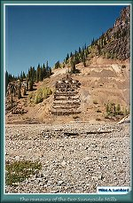 |
The remains of the two
Sunnyside mills (126k) |

|
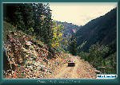 |
Headin' up into
Eureka Gulch (141k) |

|
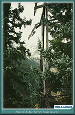 |
The remains of one of Judge
Terry's tram towers (118k) |

|
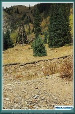 |
A tower from the second
Sunnyside tramway (149k) |

|
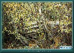 |
A piece of the Midway mill
or the tramway (157k) |

|
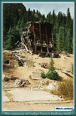 |
The remains of Judge Terry's
Midway Mill (156k) |

|
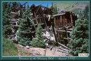 |
The remains of Judge Terry's
Midway Mill (138k) |

|
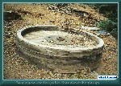 |
The massive wooden pulley
that drove the stamps (149k) |

|
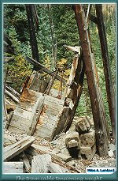 |
The tramway suspension cable
tensioning weight (149k) |

|
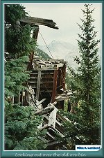 |
Looking out over the
old ore bins (134k) |

|
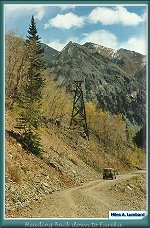 |
Headin' back down to Eureka
(146k) |


|
The Narrow Gauge Circle is written, maintained,and hosted by: Mark L. Evans Send Comments to:Mark L. Evans All original materials, text, and digital images Copyright © 1996-2017 Mark L. Evans. All rights reserved. Imitation is said to be the "sincerest" form of flattery.....Please don't flatter us without permission. |